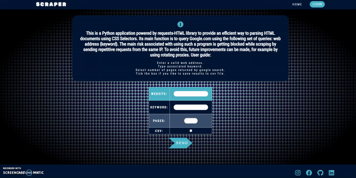

This is a Python/Django application powered by requests-HTML library to provide an efficient way to parsing HTML documents using CSS Selectors. Its main function is to query Google.com using the following set of queries: web address {keyword}.
The main risk associated with using such a program is getting blocked while scraping by sending repetitive requests from the same IP. To avoid this, future improvements can be made, for example by using rotating proxies. A rotating proxy is a proxy server that allocates a new IP address from a set of proxies stored in the proxy pool. The purpose behind using the concept of rotating IPs is to make it look that you’re not a bot but a human, accessing data from different locations from different parts of the world. When we scrape data using an automated scraper, the scraper scrapes the data at an inhuman speed which is easily detected by anti-scrapers plugins. By adding random delays and actions to our scraper we can make it resemble a human, so the website owners don’t detect it. Logging into the same website at different day times also reduces your footprint.
Features:
- Compatible with devices of all sizes
- CSS Flexbox applied to simplify complex layout structure
- HTML and CSS minification process aims to reduce webpage loading speed
- Fully responsive navigation menu with neon light button hover effect
- Embedded Font Awesome icon collection and animated tooltips
- Displaying custom templates in case of handling 404 and 500 status code errors
- Storing app’s secure credentials in environment variables
- Using unittest library to perform unit tests and selenium for functional tests

| Live | Code | Docker | Technologies |
|---|---|---|---|
 |  |  |     |